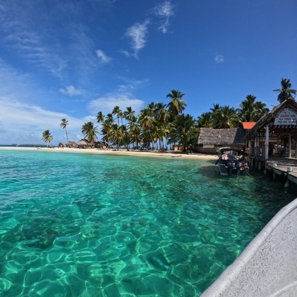
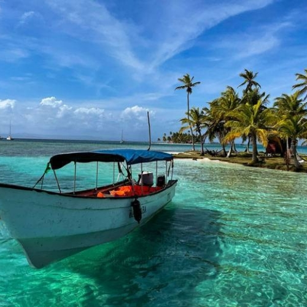
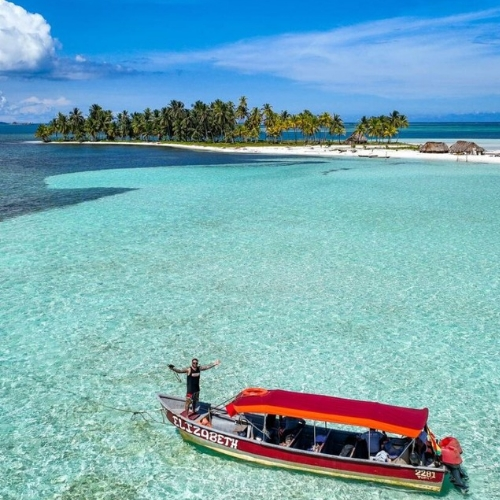
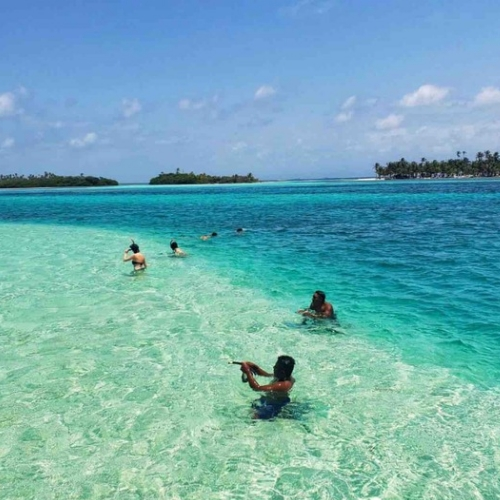

Las Islas de San Blas tambíen conocida como Guna Yala, son uno de los destinos más hermosos y naturales de Panamá. Sus aguas cristalinas, arena blanca y cultura indígena Guna la convierten en el lugar perfecto para desconectarse, relajarse y vivir una experiencia inolvidable.




¿Por qué visitar San Blas?
- Playas virgenes con agua turquesa
- Ambiente tranquilo y natural
- Cultura Guna Auténtica y preservada
- Podrás practicar Snorkel y actividades acuáticas.
Viaja con nosotros a esta isla ubicada en la costa caribeñas, en un viaje de aproximadamente dos horas en auto, más un viaje en lancha hasta la isla seleccionada
Escucha un poco del ambiente relajante que te espera en San Blas
Elige entre nuestros paquetes de viaje
| Paquete | Incluye | Precio |
|---|---|---|
| Básico(1 día) | Transporte - Tour a 2 Islas | $65/persona |
| Full Day Premium | Transporte - Tour a 3 Islas - Almuerzo | $90/persona |
| Intermedio(2 días) | Plan Básico-Hospedaje - 3 comidas | $150/persona |
| Avanzado(3 días) | Plan Básico-Hospedaje - 9 comidas | $230/persona |
Reserva ahora
Completa el siguiente formulario para reservar tu experiencia en las islas San Blas
Nos comunicaremos contigo para confirmar la disponibilidad